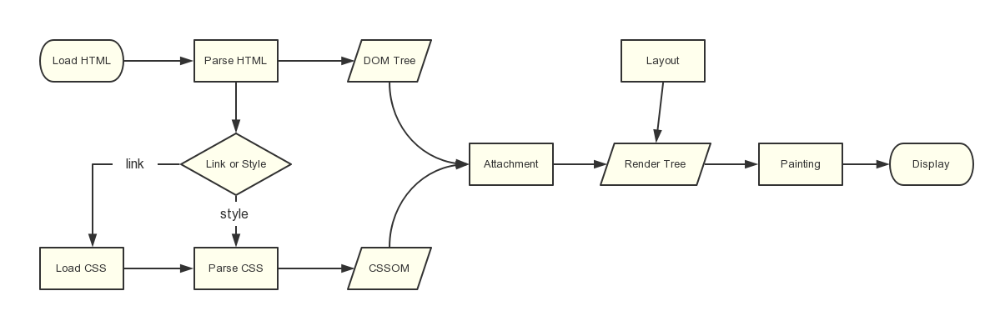

浏览器如何渲染 HTML & CSS
在正式进入 CSS 布局之前，当然有必要先了解下浏览器是如何渲染 CSS 的。而 CSS 要发挥作用还得依赖于 HTML，所以我们来一起简单了解下浏览器如何渲染 HTML & CSS。
虽然具体渲染过程很复杂，但是还是可以将其分为几个关键路径，如下：
- 处理 HTML 标记并构建 DOM 树
- 处理 CSS 标记并构建 CSSOM 树
- 将 DOM 与 CSSOM 合并成一个渲染树
- 根据渲染树来布局，计算每个节点的几何信息，再将各个节点绘制到屏幕上
整体流程图如下：

构建 DOM 树
首先浏览器渲染页面前会根据 HTML 结构构建成对应的 DOM 树。
以下面的 HTML 代码为例：
<html>
<head>
<meta name="viewport" content="width=device-width,initial-scale=1">
<link href="style.css" rel="stylesheet">
<title>Critical Path</title>
</head>
<body>
<p>Hello <span>web performance</span> students!</p>
<div><img src="awesome-photo.jpg"></div>
</body>
</html>
其 DOM 树生成的流程如下图：

- 转换： 浏览器从磁盘或网络读取 HTML 的原始字节，并根据文件的指定编码（例如 UTF-8）将它们转换成各个字符。
- 令牌化： 浏览器将字符串转换成 W3C HTML5 标准规定的各种令牌，例如，“”、“”，以及其他尖括号内的字符串。每个令牌都具有特殊含义和一组规则。
- 词法分析： 发出的令牌转换成定义其属性和规则的“对象”。
- DOM 构建： 最后，由于 HTML 标记定义不同标记之间的关系（一些标记包含在其他标记内），创建的对象链接在一个树数据结构内，此结构也会捕获原始标记中定义的父项-子项关系：HTML 对象是 body 对象的父项，body 是 paragraph 对象的父项，依此类推。
整个流程的最终输出就是我们这个简单页面的文档对象模型 (DOM)，如下图：

CSSOM
在浏览器构建上面的 DOM 时，在文档的 head 部分遇到了一个 link 标记，该标记引用一个外部 CSS 样式表：style.css。由于预见到需要利用该资源来渲染页面，它会立即发出对该资源的请求，并返回以下内容：
/* style.css */
body { font-size: 16px }
p { font-weight: bold }
span { color: red }
p span { display: none }
img { float: right }
与处理 HTML 时一样，我们需要将收到的 CSS 规则转换成某种浏览器能够理解和处理的东西。因此，我们会重复 HTML 过程，不过是为 CSS 而不是 HTML：

CSS 字节转换成字符，接着转换成令牌和节点，最后挂靠到一个称为“CSS 对象模型”(CSSOM) 的树结构内：

CSSOM 为何具有树结构？这是因为浏览器为页面上的任何对象计算最后一组样式时，都会先从适用于该节点的最通用规则开始（例如，如果该节点是 body 元素的子项，则应用所有 body 样式），然后通过应用更具体的规则（即规则“向下级联”）以递归方式优化计算的样式。
以上面的 CSSOM 树为例进行更具体的阐述。span 标记内包含的任何置于 body 元素内的文本都将具有 16 像素字号，并且颜色为红色 — font-size 指令从 body 向下级联至 span。不过，如果某个 span 标记是某个段落 (p) 标记的子项，则其内容将不会显示。
合并渲染树
接下来就是将 DOM 树与 CSSOM 树合并形成渲染树。
渲染树会网罗网页上所有可见的 DOM 内容，以及每个节点的所有 CSSOM 样式信息。

注：渲染树只包含渲染网页所需的节点，如display: none;的元素是不会出现在渲染树种的。
布局及绘制
有了渲染树，我们就可以进入“布局”阶段。
到目前为止，我们计算了哪些节点应该是可见的以及它们的计算样式，但我们尚未计算它们在设备视口内的确切位置和大小---这就是“布局”阶段，也称为“自动重排”。
为弄清每个对象在网页上的确切大小和位置，浏览器从渲染树的根节点开始进行遍历。让我们考虑下面这样一个简单的实例：
<html>
<head>
<meta name="viewport" content="width=device-width,initial-scale=1">
<title>Critial Path: Hello world!</title>
</head>
<body>
<div style="width: 50%">
<div style="width: 50%">Hello world!</div>
</div>
</body>
</html>
以上网页的正文包含两个嵌套 div：第一个（父）div 将节点的显示尺寸设置为视口宽度的 50%；而里面内嵌的第二个 div 将其宽度设置为其父项的 50%，即视口宽度的 25%。如下图：

布局流程的输出是一个“盒模型”，它会精确地捕获每个元素在视口内的确切位置和尺寸：所有相对测量值都转换为屏幕上的绝对像素。
最后，既然我们知道了哪些节点可见、它们的计算样式以及几何信息，我们终于可以将这些信息传递给最后一个阶段：将渲染树中的每个节点转换成屏幕上的实际像素形成我们可见的页面。这一步通常称为“绘制”或“栅格化”。
注：执行渲染树构建、布局和绘制所需的时间将取决于文档大小、应用的样式，以及运行文档的设备：文档越大，浏览器需要完成的工作就越多；样式越复杂，绘制需要的时间就越长（例如，单色的绘制开销“较小”，而阴影的计算和渲染开销则要“大得多”）。